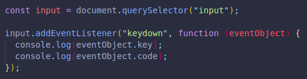

Keyboard events helps us log or keep track of things happening on the user's keyboard.
Here are two examples for:
This would console log our message every single time a key is pressed down, including function keys, numbers, etc. (ALL)
And also every time a key is released.(So we may have 20 keydown followed by a single keyup if we press and hold a single key!)

If we use a parameter on our function, an event object will be created, we can pass that object later to the function.
We can pass the event object,(which is automatically generated when we use an event listener), to console.log to see its details.
Here we log both the key and the code of that key every time a key is pressed down.
Here is the result of typing "Hi !!!"
(We held shift for all 3 exclamation points.)
If we care about the key values, we should use key.
If instead we care about the position on the keyboard that the user presses, like WASD to move up, left, down and right, then code would be better. (The key values may change if user changes languages.)
We can instead use window to get the keys and values pressed anywhere on the window, not just the input.
Here we display a message in the console every time a specific key code is met with a switch statement. We are checking for the key itself, not the value of pressing it.
If any other key is pressed, we have a default message to console log.
RESULTS IN -->